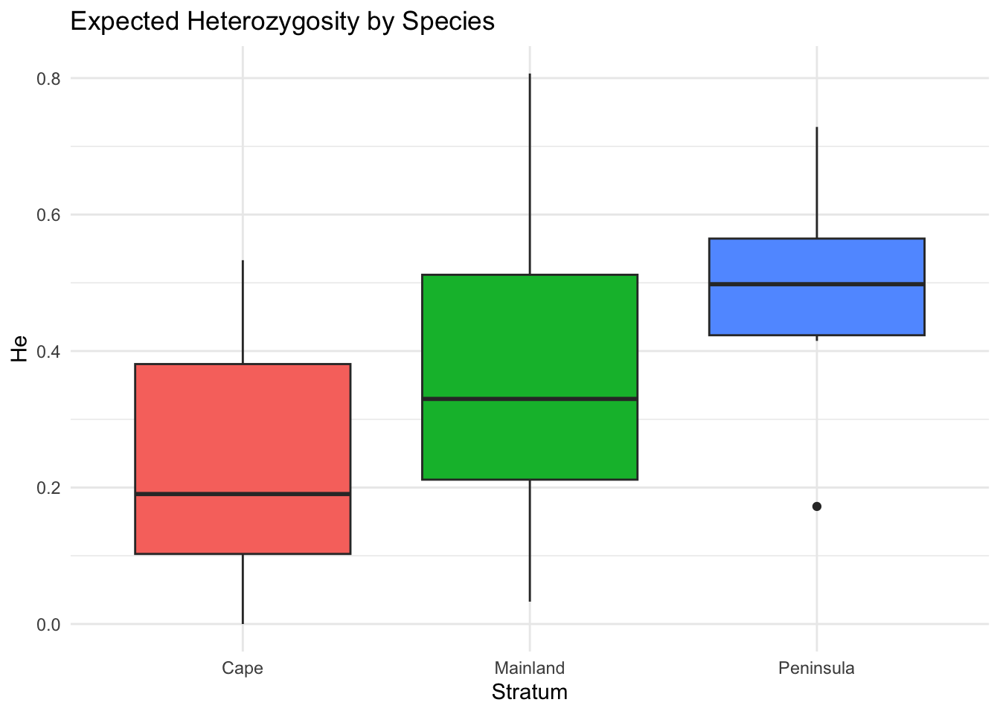

library(gstudio)
library(dplyr)
library(ggplot2)
data(arapat)5 Genetic Diversity
This chapter covers estimation of genetic diversity statistics using genetic_diversity(). As with genetic_structure(), genetic_distance() and genetic_relatedness(), this front-end function is the only way to reach the individual estimators; there are no standalone A(), He() or Fis() functions.
5.1 The genetic_diversity() Wrapper
The genetic_diversity() function is the main entry point for diversity estimation. It dispatches to specific estimators based on the mode parameter:
| Mode | Statistic | Description |
|---|---|---|
"A" |
Allelic richness | Number of alleles |
"Ae" |
Effective alleles | \(1 / \sum p_i^2\) |
"A95" |
A (5% threshold) | Alleles with frequency >= 0.05 |
"He" |
Expected heterozygosity | \(1 - \sum p_i^2\) |
"Ho" |
Observed heterozygosity | Proportion of heterozygotes |
"Hi" |
Individual heterozygosity | Proportion of an individual’s loci that are heterozygous |
"Hes" |
Corrected He | Nei’s unbiased within-stratum \(H_S\) (needs stratum) |
"Hos" |
Corrected Ho | Ho averaged across strata after Nei (needs stratum) |
"Ht" |
Total He | Nei’s unbiased total \(H_T\) (needs stratum) |
"Fis" |
Inbreeding coefficient | \(1 - H_o/H_e\) |
"Pe" |
Polymorphic index | \(\sum p_i(1-p_i)\) |
5.2 Global (Unstratified) Estimates
Without a stratum, diversity is estimated across all individuals:
arapat |>
genetic_diversity(mode = "A") Locus A
1 LTRS 2
2 WNT 5
3 EN 5
4 EF 2
5 ZMP 2
6 AML 13
7 ATPS 10
8 MP20 19arapat |>
genetic_diversity(mode = "He") Locus He
1 LTRS 0.4989034
2 WNT 0.6528320
3 EN 0.4489313
4 EF 0.4361538
5 ZMP 0.3394444
6 AML 0.8293685
7 ATPS 0.7193649
8 MP20 0.8185723Pass several modes to get one table with a column for each:
arapat |>
genetic_diversity(mode = c("A", "Ae", "He", "Ho")) Locus A Ae He Ho
1 LTRS 2 1.995623 0.4989034 0.23691460
2 WNT 5 2.880450 0.6528320 0.27840909
3 EN 5 1.814656 0.4489313 0.20555556
4 EF 2 1.773533 0.4361538 0.14404432
5 ZMP 2 1.513877 0.3394444 0.15454545
6 AML 13 5.860583 0.8293685 0.37058824
7 ATPS 10 3.563347 0.7193649 0.08539945
8 MP20 19 5.511837 0.8185723 0.446927375.3 Per-Stratum Estimates
Provide a stratum argument to compute diversity within each population:
arapat |>
genetic_diversity(stratum = "Species", mode = "He") Stratum Locus He
2 Cape LTRS 0.14720000
3 Cape WNT 0.23374726
4 Cape EN 0.42000000
5 Cape EF 0.06444444
6 Cape ZMP 0.00000000
7 Cape AML 0.53312835
8 Cape ATPS 0.11546667
9 Cape MP20 0.36791111
10 Mainland LTRS 0.38850309
11 Mainland WNT 0.03277778
12 Mainland EN 0.50285714
13 Mainland EF 0.27119377
14 Mainland ZMP 0.09500000
15 Mainland AML 0.53854875
16 Mainland ATPS 0.25038580
17 Mainland MP20 0.80670340
18 Peninsula LTRS 0.42591805
19 Peninsula WNT 0.50613781
20 Peninsula EN 0.17229600
21 Peninsula EF 0.48979592
22 Peninsula ZMP 0.41492187
23 Peninsula AML 0.72842417
24 Peninsula ATPS 0.52255763
25 Peninsula MP20 0.69148800arapat |>
genetic_diversity(stratum = "Species", mode = c("Ae", "He", "Fis")) Stratum Locus Ae He Fis
1 Cape LTRS 1.172608 0.14720000 0.27536232
2 Cape WNT 1.305052 0.23374726 0.76875000
3 Cape EN 1.724138 0.42000000 0.07936508
4 Cape EF 1.068884 0.06444444 0.37931034
5 Cape ZMP 1.000000 0.00000000 NaN
6 Cape AML 2.141916 0.53312835 0.81506977
7 Cape ATPS 1.130540 0.11546667 0.65357968
8 Cape MP20 1.582056 0.36791111 0.52887171
9 Mainland LTRS 1.635331 0.38850309 -0.21549156
10 Mainland WNT 1.033889 0.03277778 -0.01694915
11 Mainland EN 2.011494 0.50285714 0.54545455
12 Mainland EF 1.372107 0.27119377 -0.19298246
13 Mainland ZMP 1.104972 0.09500000 1.00000000
14 Mainland AML 2.167076 0.53854875 0.73473684
15 Mainland ATPS 1.334020 0.25038580 0.33436055
16 Mainland MP20 5.173397 0.80670340 0.17359135
17 Peninsula LTRS 1.741912 0.42591805 0.43166651
18 Peninsula WNT 2.024856 0.50613781 0.25909507
19 Peninsula EN 1.208161 0.17229600 0.14101314
20 Peninsula EF 1.960000 0.48979592 0.69212963
21 Peninsula ZMP 1.709173 0.41492187 0.48785539
22 Peninsula AML 3.682213 0.72842417 0.35787148
23 Peninsula ATPS 2.094494 0.52255763 0.83293405
24 Peninsula MP20 3.241365 0.69148800 0.276921655.4 Single Loci
A bare locus vector can be passed in place of a data frame:
arapat |>
pull(LTRS) |>
genetic_diversity(mode = "Fis") Locus Fis
1 Locus 0.52512935.5 Individual Heterozygosity
The Hi mode is estimated per individual rather than per locus. It returns one row for each individual, keeping the non-locus columns, so it can be summarized by any grouping you like:
arapat |>
genetic_diversity(mode = "Hi") |>
group_by(Species) |>
summarize(mean_Hi = mean(Hi))# A tibble: 3 × 2
Species mean_Hi
<fct> <dbl>
1 Cape 0.117
2 Mainland 0.301
3 Peninsula 0.2755.6 Corrected Heterozygosity (Nei’s)
The Hes and Hos modes require a stratum because they apply a small-sample correction per subpopulation:
arapat |>
genetic_diversity(stratum = "Species", mode = "Hes") Locus Hes
1 LTRS 0.3233431
2 WNT 0.2606681
3 EN 0.3687470
4 EF 0.2781409
5 ZMP 0.1731159
6 AML 0.6108282
7 ATPS 0.2999070
8 MP20 0.6284672
9 Multilocus 0.3679022Ht gives the matching total expected heterozygosity (the \(H_S\) and \(H_T\) that genetic_structure() builds \(G_{ST}\) from). These pooled modes return one row per locus, so they combine with each other but not with per-stratum modes:
arapat |>
genetic_diversity(stratum = "Species", mode = c("Hos", "Hes", "Ht")) Locus Hos Hes Ht
1 LTRS 0.27365079 0.3233431 0.4531627
2 WNT 0.15412913 0.2606681 0.6350801
3 EN 0.25441270 0.3687470 0.6561538
4 EF 0.17144102 0.2781409 0.3303420
5 ZMP 0.07083333 0.1731159 0.2039553
6 AML 0.23639688 0.6108282 0.8619706
7 ATPS 0.09798942 0.2999070 0.7548774
8 MP20 0.44666667 0.6284672 0.8734015
9 Multilocus 0.21318999 0.3679022 NA5.7 Multilocus Diversity
The multilocus_diversity() function computes a summary across all loci:
arapat |>
multilocus_diversity()[1] 0.83746565.8 Selecting Specific Loci
You can restrict the analysis to a subset of loci, with or without a stratum:
arapat |>
genetic_diversity(loci = c("LTRS", "WNT"), mode = "He") Locus He
1 LTRS 0.4989034
2 WNT 0.6528320or select the columns first:
arapat |>
select(Species, LTRS, WNT) |>
genetic_diversity(stratum = "Species", mode = "He") Stratum Locus He
2 Cape LTRS 0.14720000
3 Cape WNT 0.23374726
4 Mainland LTRS 0.38850309
5 Mainland WNT 0.03277778
6 Peninsula LTRS 0.42591805
7 Peninsula WNT 0.506137815.9 Comparing Populations
A common workflow is to estimate diversity per population, then compare:
he_by_pop <- arapat |>
genetic_diversity(stratum = "Species", mode = "He")
he_by_pop |>
group_by(Stratum) |>
summarize(mean_He = mean(He), sd_He = sd(He))# A tibble: 3 × 3
Stratum mean_He sd_He
<chr> <dbl> <dbl>
1 Cape 0.235 0.188
2 Mainland 0.361 0.254
3 Peninsula 0.494 0.173he_by_pop |>
ggplot(aes(x = Stratum, y = He, fill = Stratum)) +
geom_boxplot() +
theme_minimal() +
labs(title = "Expected Heterozygosity by Species",
y = "He") +
theme(legend.position = "none")
5.10 Without Pipes
genetic_diversity(arapat, mode = "He")
genetic_diversity(arapat, mode = c("A", "Ae", "He", "Ho"))
genetic_diversity(arapat, stratum = "Species", mode = "He")
genetic_diversity(arapat, loci = c("LTRS", "WNT"), mode = "He")
genetic_diversity(arapat$LTRS, mode = "Fis")
genetic_diversity(arapat, mode = "Hi")
multilocus_diversity(arapat)
he_by_pop <- genetic_diversity(arapat, stratum = "Species", mode = "He")
ggplot(he_by_pop, aes(x = Stratum, y = He, fill = Stratum)) +
geom_boxplot()